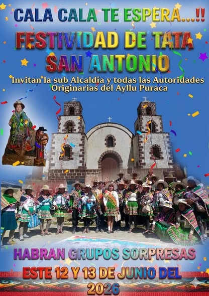
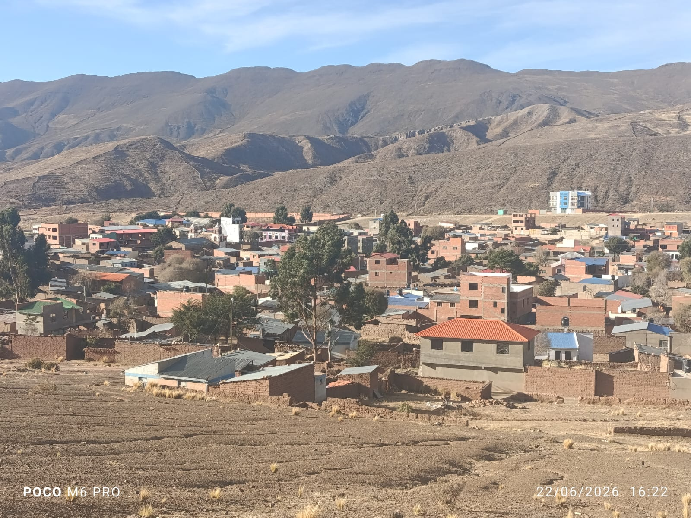
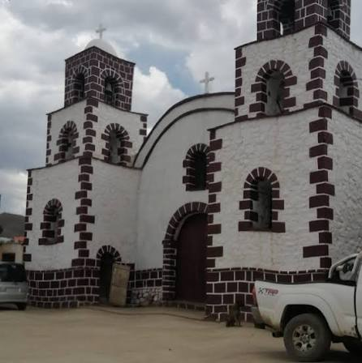
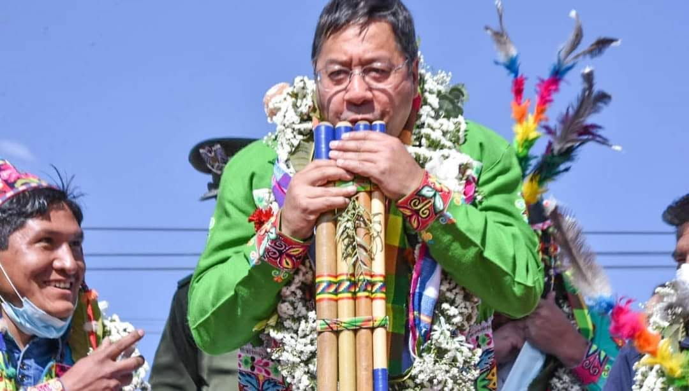
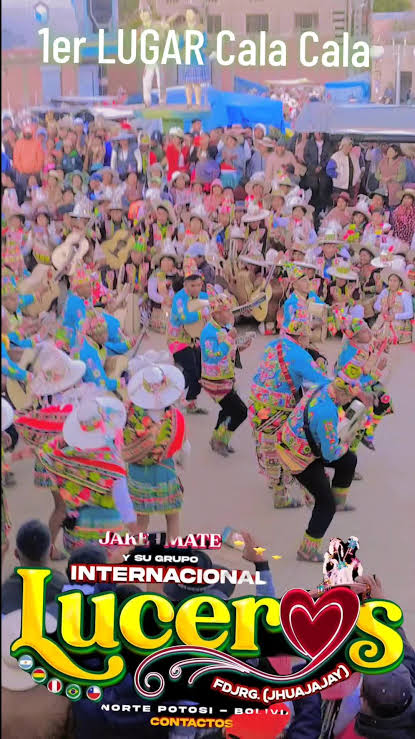
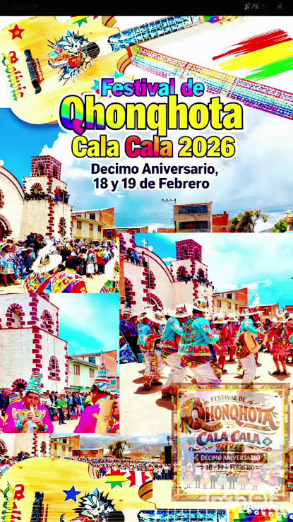
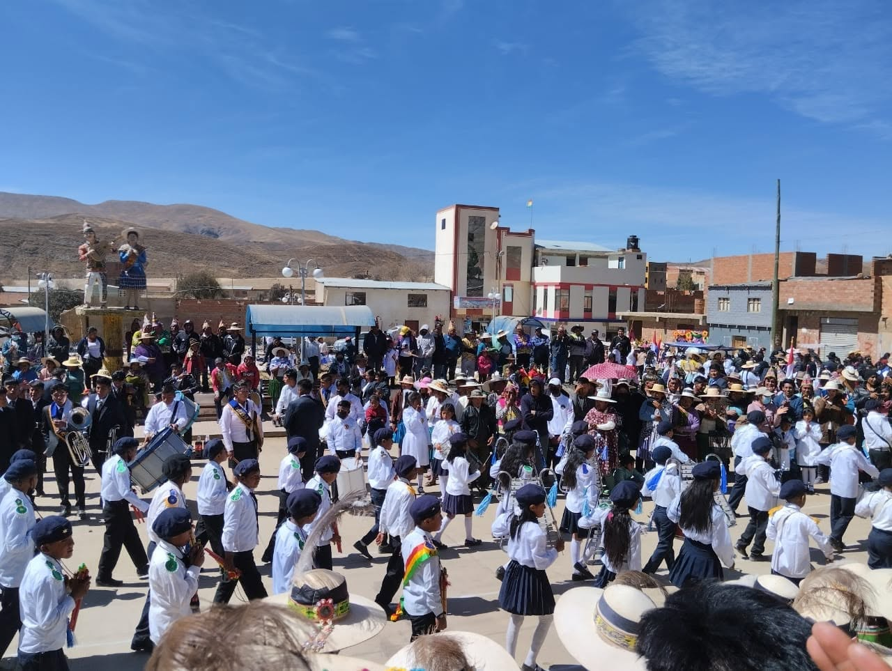
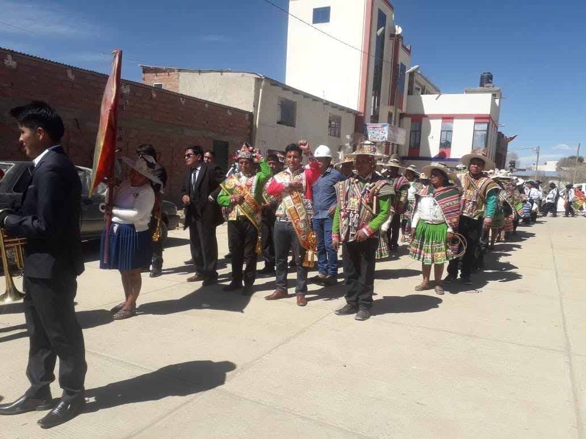
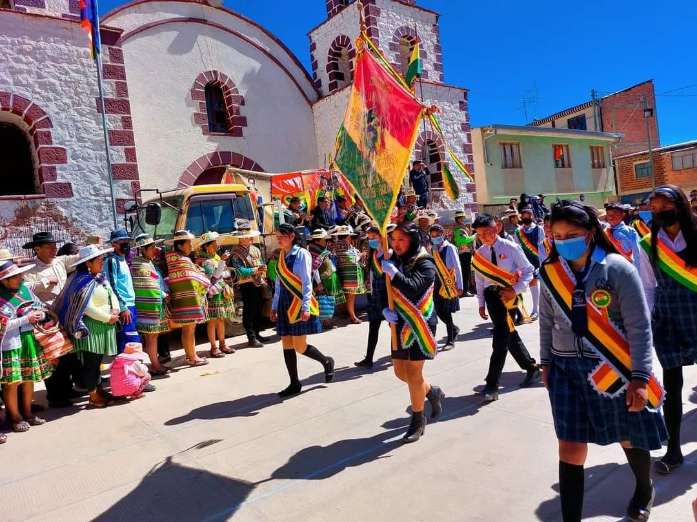

Ivitacion por parte de las autoridades del Ayllu Puraca a la fiesta de San Antonio que se llevara a cabo los dias 12, 13 y 14 de junio de 2026.

Pueblo Cala cala 2026

Iglesia Catolica de nuestro Pueblo Cala cala

La llegada del presidente Arce Catacora en nuestra festival de Qhoqhota 18 de febrero de 2025

Grupo Luceros 1er Lugar en la Categoria de Qhonqhota 2025

Desimo Aniversario Festival de Qhonqhota Cala cala 2025 se llevara a cabo los dias 18 y 19 de febrero

Desfile de nuestros estudiantes de la unidad educativa "6 de Junio" por el aniversario de Nuestra Patria 2025

Desfile de nuestros Autoridades del Ayllu Puraca por el aniversario de Nuestra Patria 2025

Desfile de nuestros estudiantes de la unidad educativa "San Antonio" por el aniversario de Nuestra Patria 2025